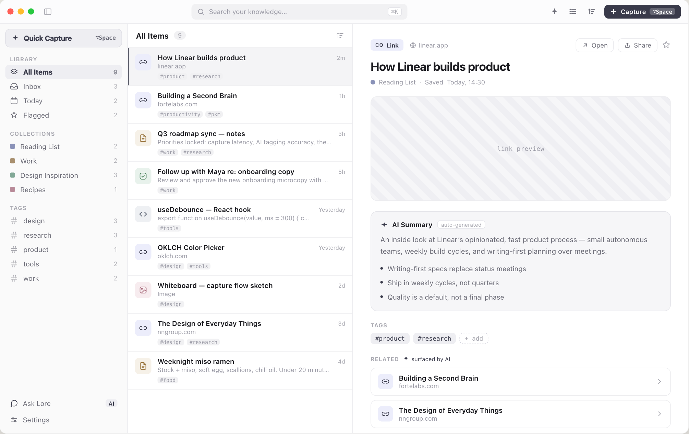
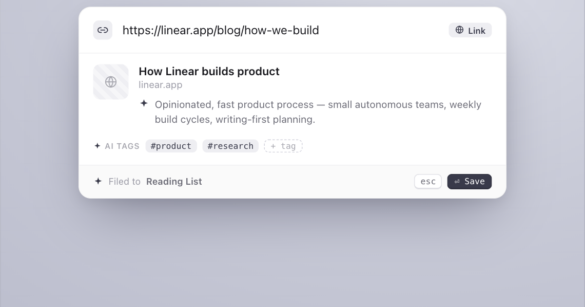
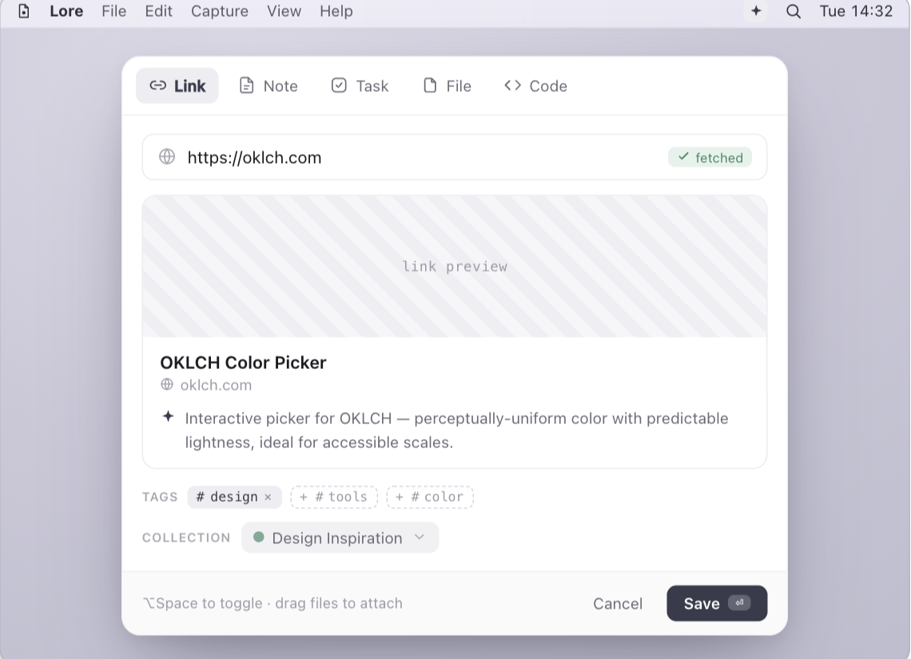
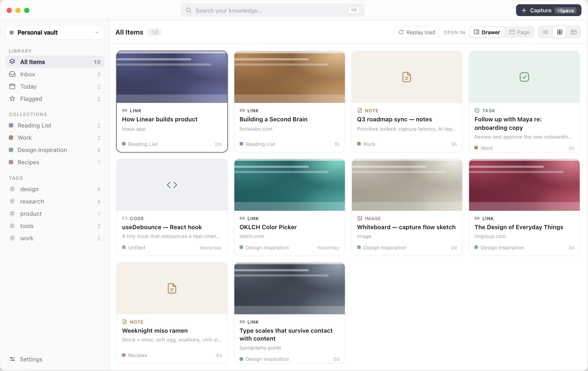
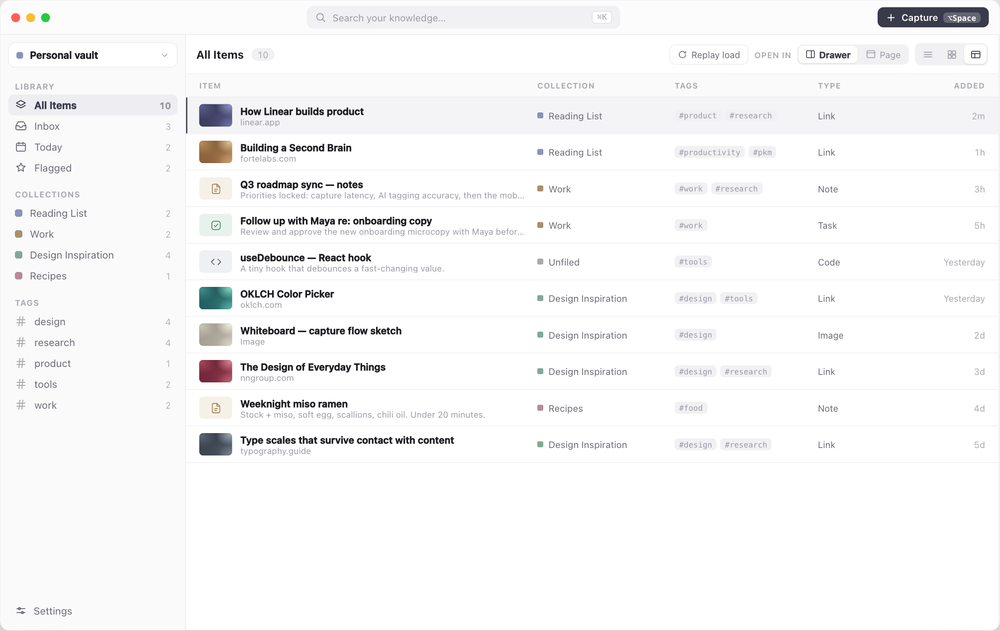

Offline first. The network is never required.
No sign-up, no sync service, no telemetry. Sync is whatever you already use for folders.
Press ⌥Space anywhere, drop in a link, note, task or snippet. Lore files it as Markdown you own.

A frameless panel floats over whatever you are in. Paste a URL and Lore titles it, tags it and files it. Press Esc and you are back.


Folders are collections and files are items. Edit in vim, move in Finder, pull on another machine. Lore follows along without a restart.
<vault>/
.lore/
collections.json colours, order
index.db derived, rebuilt
Reading List/
how-linear-builds-product.md
Work/
q3-roadmap-sync.md
an-unfiled-note.md---
type: link
title: How Linear builds product
url: https://linear.app/blog/how-linear-builds-product
tags: [product, research]
related:
- '[[building-a-second-brain]]'
---
Your own notes on the link, in plain Markdown.

No sign-up, no sync service, no telemetry. Sync is whatever you already use for folders.
The vault is a folder. Committing it is up to you, and retitling a note never renames the file behind your back.
Frontmatter keys Lore does not know survive a round-trip. A link to a note that does not exist yet heals when it appears.
Nothing is unlinked. Removed items wait in
.lore/trash
until you decide.
Delete .lore/index.db and search
rebuilds it from your files. Your notes are the only source of truth.
Built and published with every release.
Or build it from source:
pnpm install && pnpm tauri dev